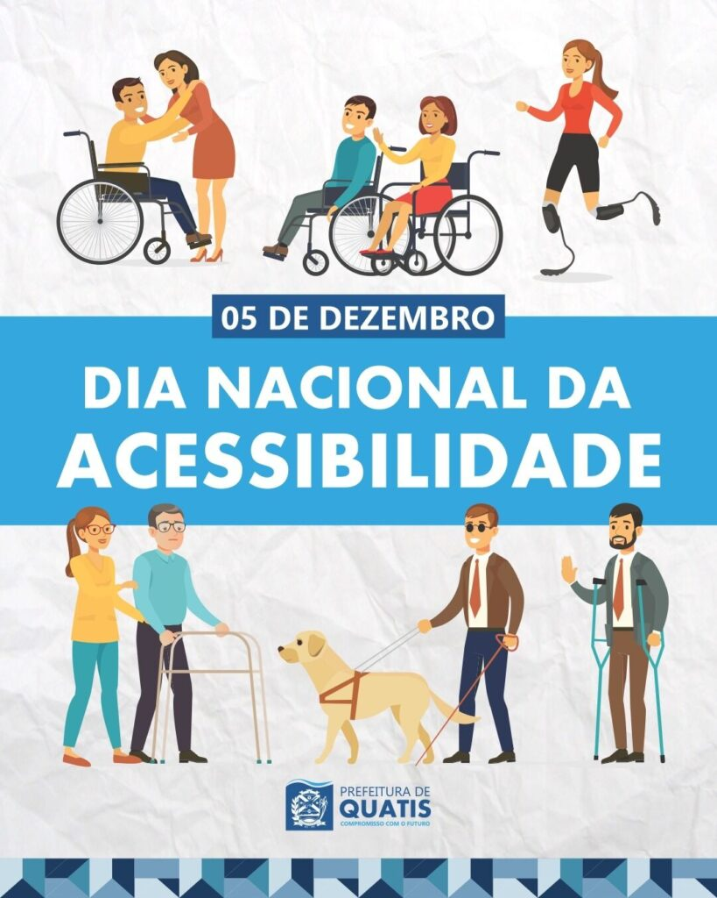
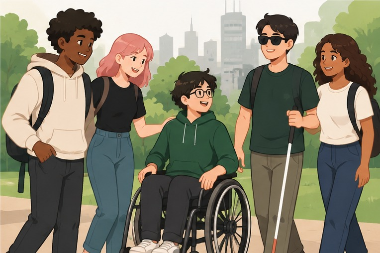

Comece pelo respeito
Pessoas com deficiência têm diferentes experiências, preferências e necessidades. Evite tratar alguém como incapaz, falar com acompanhantes em vez de falar diretamente com a pessoa ou oferecer ajuda sem perguntar.
Atitudes que fazem diferença
- Mantenha rampas, calçadas e áreas de circulação desobstruídas.
- Respeite vagas, assentos e filas preferenciais destinados a quem tem direito.
- Não toque em cadeira de rodas, bengala, cão-guia ou outro recurso de apoio sem autorização.
- Em conversas, apresentações e vídeos, considere legendas, linguagem clara e diferentes formatos.
- Ao criar documentos ou sites, utilize títulos, contraste, descrições de imagens e navegação por teclado.
- Escute pessoas com deficiência e considere suas opiniões nas decisões que afetam suas vidas.
Barreiras também podem ser atitudinais
Nem todas as barreiras são físicas. Preconceito, falta de informação, baixa expectativa sobre as capacidades de alguém e decisões tomadas sem ouvir as pessoas envolvidas também limitam a participação.
Pequenas mudanças, impacto coletivo
Uma sociedade inclusiva não depende de uma única pessoa. Escolas, empresas, governos, famílias e comunidades podem identificar obstáculos e trabalhar juntos para removê-los.
Reflita: antes de concluir que alguém não pode participar de uma atividade, pense se o ambiente, a comunicação ou a organização podem ser adaptados.